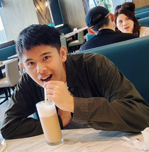

國立台灣大學建築與城鄉研究所碩士生，關注基礎設施的廢棄、再生與其中蘊含的文化與空間正義問題。透過田野與民族誌方法，追蹤物件、空間與制度如何被重新賦予意義。

出生於桃園，求學於農業經濟學，但真正的養分卻常來自社會學、人類學與人文思想，大學時期便心嚮往城鄉所，從大二便寄生於不同城鄉所課堂。一路走來，我始終在身份的縫隙裡摸索：既是離鄉背井的學子，也是渴望轉向社會學與空間權力研究的追尋者。這種不確定與游移，也讓我更敏感於邊界、空間與制度的張力。
我屬於一個矛盾的世代：在快速都市化與全球化的浪潮中成長，既見過疫情時代，也目睹了城市基礎設施帶來的排擠與分化。前往部落田野所見的土地與人情，使我難以忽視發展背後的代價；而都市的繁華與困境，以及大二時前往萬華進行社區工作的生命經驗，則推動我不斷追問居住正義與空間的社會性。
研究上，我從退役基礎設施的物質性出發——共享單車如何在城鄉之間流動、被丟棄又被重新賦義，逐漸走向對文化資產與遺產政治的關注。桃園火車站下挖出的清代鐵道與史前遺址，讓我看見基礎建設的「進步敘事」如何輕易掩埋掉土地的時間厚度，也讓我更確信：遺產不是凝固的過去，而是持續被爭奪、被生成的政治過程。這些關懷最終指向同一個問題——當代城市如何在發展的焦慮裡，重新學習與自己的歷史共處。
平日裡，我閱讀與思考，這些閱讀滋養了我，使我在學術與生活中保持批判，也保持柔軟。未來，我期待持續在土地、發展與空間之間尋找對話，並用書寫留下我世代的思考痕跡。
Retired Bike-Sharing Infrastructure and the Reproduction of Mobility Injustice in Taiwan — 探討退役的城市共享單車基礎設施如何在鄉村場域中被重新挪用，追蹤被丟棄的流動性系統如何被重新賦義與重新估值，並從中討論基礎設施研究與遺產形構之間的連結。
以桃園火車站地下化工程開挖出的清代鐵道遺構、日治車站結構與訊塘埔文化遺址為個案，分析「落後焦慮」與「面子工程」邏輯如何驅動官方在一個月內迅速回填灌漿。透過與台中新車站、北門站、高鐵新竹段等台灣案例，以及阿姆斯特丹、羅馬、首爾等國際案例的比較，檢視現地保存在審議體制與工程政治中的可能性，並借用 Laurajane Smith 的動態文化資產觀點，重新思考遺址出土事件作為診斷城市治理黑箱與集體歷史失憶的契機。
北京，中國 — Accepted Presentation
荷蘭，烏特勒支
日本，淡路島田野實習
日本，神戶
新加坡學術交換
國立臺灣大學建築與城鄉研究所環境規劃設計實習成果。記錄永春街——一座緊鄰臺大與寶藏巖、卻長期在城市敘事裡「失蹤」的非正式聚落——居民如何在破碎的人行道與制度懸置中艱難移動。從友善交通調查出發，因體制內陳情難以撼動現況，轉而以戰術都市主義進行貼紙與舉牌的街頭擾動，最終在寶藏巖國際藝術村策劃「299 失蹤計畫」展覽，並促成與市議員的對話。
目前投稿審查中，全文將於正式刊登後更新連結。
同團隊作品〈富水之心，韌性永春：永春街聚落的都市更新展望〉於第二十一屆全國規劃系所實習聯展，榮獲「都市更新創新規劃獎」優選獎。查看正式公告
也可以下載完整 PDF 版本留存。
下載 CV (PDF)